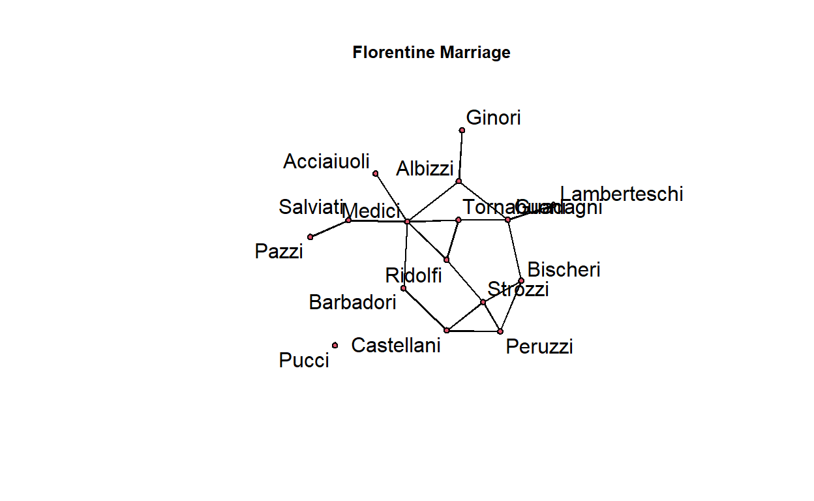
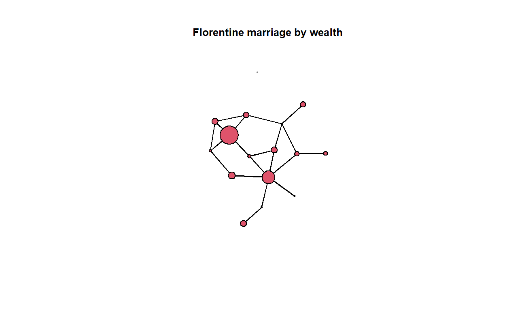
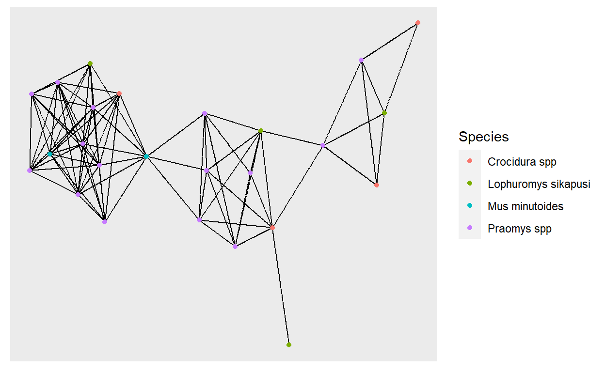
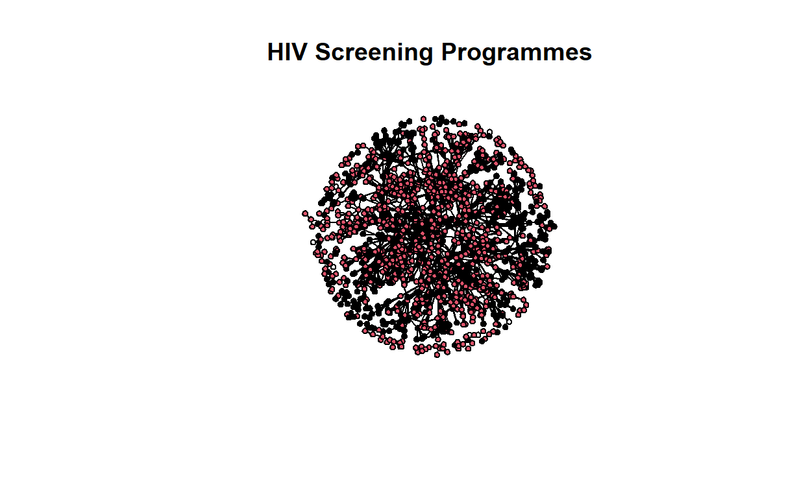
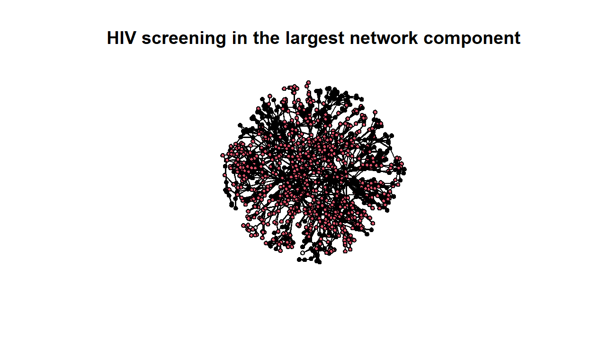
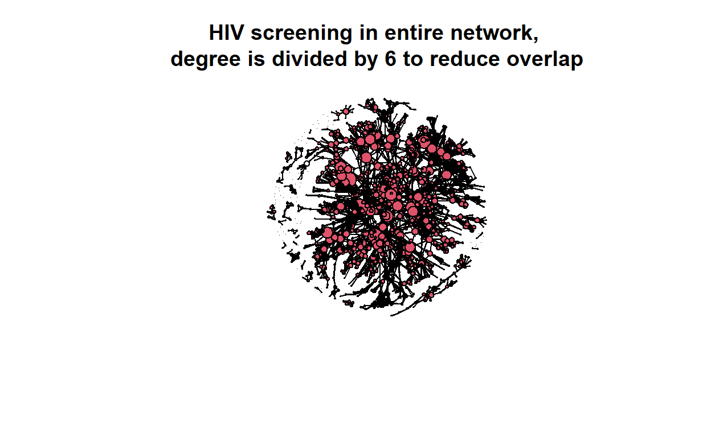
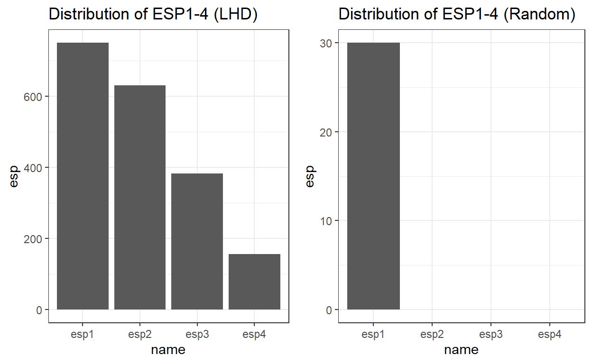
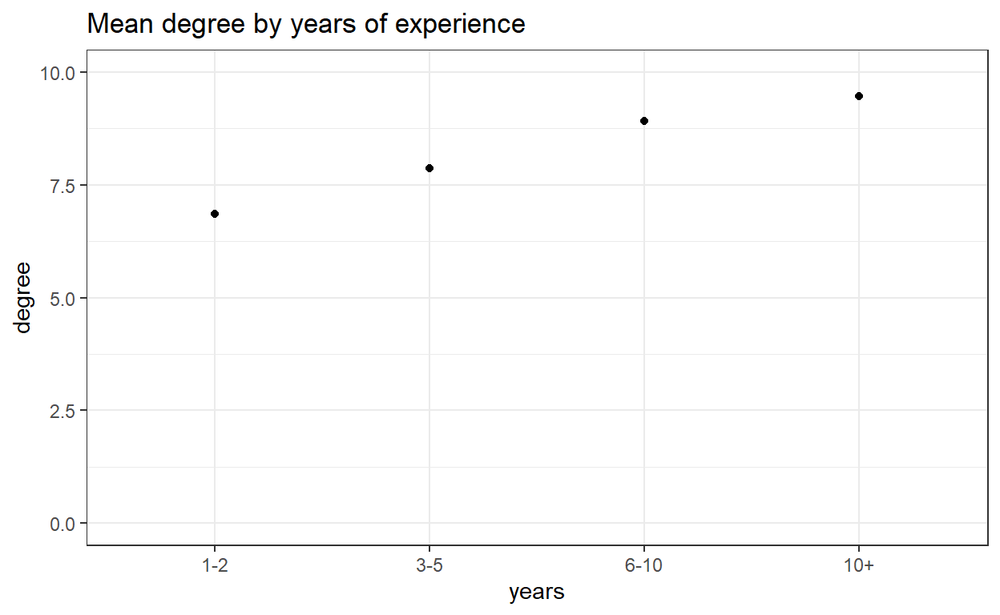
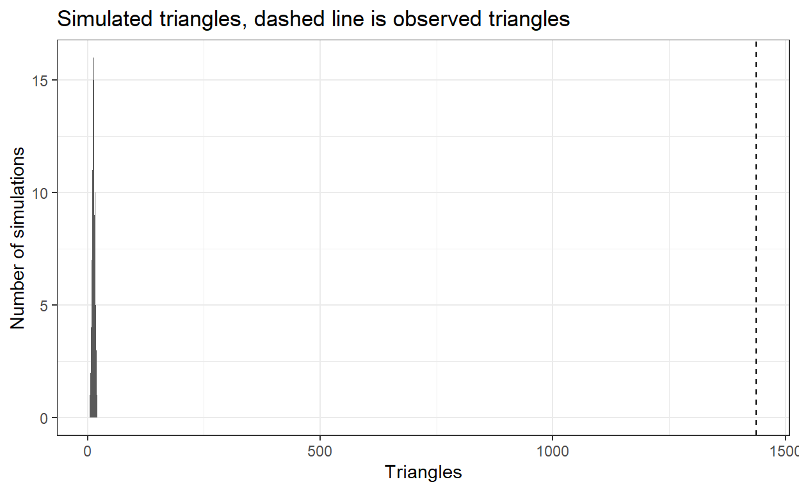

The tutorial is accessed here - https://statnet.org/Workshops/ergm_tutorial.html
ERGMs are formulated as:
\[\begin{align*} \log({\exp(\theta'g(y))}) = \theta_1g_1(y) + \theta_2g_2(y)+ ... + \theta_pg_p(y) \end{align*}\]
Where: + \(y\) is the random variable for the state of the network + \(g(y)\) is a vector of model statistics for network y + \(\sigma\) is the vector of coefficients for those statistics, and + \(k(\sigma)\) represents the quantity in the numerator summed over all possible networks(typically constrained to be all networks with the same node set a \(y\))
The data is imported as a network object. We can
describe the structure of the network and then visualising it.
flomarriage Network attributes:
vertices = 16
directed = FALSE
hyper = FALSE
loops = FALSE
multiple = FALSE
bipartite = FALSE
total edges= 20
missing edges= 0
non-missing edges= 20
Vertex attribute names:
priorates totalties vertex.names wealth
No edge attributesplot(flomarriage,
main="Florentine Marriage",
cex.main=0.8,
label = network.vertex.names(flomarriage)) # Plot the network
This displays the edges between all the nodes in the network.
wealth <- flomarriage %v% 'wealth' # %v% references vertex attributes
wealth [1] 10 36 55 44 20 32 8 42 103 48 49 3 27 10 146 48plot(flomarriage,
vertex.cex=wealth/25,
main="Florentine marriage by wealth", cex.main=0.8) # Plot the network with vertex size proportional to wealth
We can set the vertex of interest to wealth, here, this is the only
vertex property %v% is used to reference the vertex. The
size of a node is related to the value of wealth.
The simplest model, containing only the one term that represents the
total number of edges in the network, \(\sum{y_{ij}}\) can be accessed by using the
ergm-term of edges.
summary(flomarriage ~ edges)edges
20 Call:
ergm(formula = flomarriage ~ edges)
Maximum Likelihood Results:
Estimate Std. Error MCMC % z value Pr(>|z|)
edges -1.6094 0.2449 0 -6.571 <1e-04 ***
---
Signif. codes: 0 '***' 0.001 '**' 0.01 '*' 0.05 '.' 0.1 ' ' 1
Null Deviance: 166.4 on 120 degrees of freedom
Residual Deviance: 108.1 on 119 degrees of freedom
AIC: 110.1 BIC: 112.9 (Smaller is better. MC Std. Err. = 0)This simple model specifies a single homogenous probability for all
ties, captured by the coefficient of the edges term. This
can be interpreted by returning to the logit form of the ERGM. The
log-odds that a tie is present is:
\[\begin{align*} {\sf{logit}(p(y))} &= \sigma * \delta(g(y)) \\ &= -1.61 * \text{change in the number of ties} \\ &= -1.61 * 1 \end{align*}\]
for every tie, since the addition of any tie to the network always increases the total number by 1. The corresponding probability is obtained by taking the expit, or inverse logit, of \(\sigma\):
\[\begin{align*} &= \sf {exp}(-1.61)/(1+ \sf {exp}(-1.61)) \\ &= 0.167 \end{align*}\]
This probability corresponds to the density we observe in the flomarriage network. There are 20 ties and therefore \(\binom{16}{2} = (16 \times 15)/2 = 120\) dyads, so the probability of a tie is \(20/120 = 0.167\)
Applied to Seilama Grid 1 Visit 5.
landuse_graph <- read_rds(here("data", "graphs_landuse.rds"))
seilama_nodes <- as_tbl_graph(landuse_graph$agriculture) %>%
activate(nodes) %>%
filter(Village == "Seilama" &
Grid == "1" &
Visit == "5")
rodent_graph <- igraph::simplify(as.igraph(seilama_nodes))
rodent_graph <- asNetwork(rodent_graph)
rodent_graph Network attributes:
vertices = 25
directed = FALSE
hyper = FALSE
loops = FALSE
multiple = FALSE
bipartite = FALSE
total edges= 87
missing edges= 0
non-missing edges= 87
Vertex attribute names:
Grid Landuse Serostatus Species vertex.names Village Visit
No edge attributesggraph(rodent_graph) +
geom_edge_link() +
geom_node_point(aes(colour = Species))
The graph has been filtered using tidygraph and
simplified in igraph prior to conversion to a
network object.
summary(rodent_graph ~ edges)edges
87 Call:
ergm(formula = rodent_graph ~ edges)
Maximum Likelihood Results:
Estimate Std. Error MCMC % z value Pr(>|z|)
edges -0.8954 0.1272 0 -7.037 <1e-04 ***
---
Signif. codes: 0 '***' 0.001 '**' 0.01 '*' 0.05 '.' 0.1 ' ' 1
Null Deviance: 415.9 on 300 degrees of freedom
Residual Deviance: 361.3 on 299 degrees of freedom
AIC: 363.3 BIC: 367 (Smaller is better. MC Std. Err. = 0)[1] 0.2900791The probability of tie is 0.29. This is equivalent to the number of ties 87 divided by the number of dyads \(\binom{25}{2} = 300\).
A term can be added, one that represents clustering. The number of
completed triangles in the network. This is a dyad dependent term: the
status of any triangle containing dyan \(y_{i,j}\) depends on the status of dyads of
the \(y_{i,k}\) and \(y_{j,k}\). This means that any model
containing the ergm-term triangle has the proprty that
dyads are not probabilistically independent of one another. As a result,
ergm uses a stochastic MCMC-based algorithm.
edges triangle
20 3 Call:
ergm(formula = flomarriage ~ edges + triangles)
Monte Carlo Maximum Likelihood Results:
Estimate Std. Error MCMC % z value Pr(>|z|)
edges -1.6900 0.3620 0 -4.668 <1e-04 ***
triangle 0.1901 0.5982 0 0.318 0.751
---
Signif. codes: 0 '***' 0.001 '**' 0.01 '*' 0.05 '.' 0.1 ' ' 1
Null Deviance: 166.4 on 120 degrees of freedom
Residual Deviance: 108.1 on 118 degrees of freedom
AIC: 112.1 BIC: 117.6 (Smaller is better. MC Std. Err. = 0.01102)This can be interpreted as follows. The conditional log-odds of two nodes having a ties, keeping the rest of the network fixed is.
\begin(align) -1.68 + 0.1603 * \end{align}
The three probabilities for these options are therefore: + 0.157 + 0.18 + 0.204
summary(rodent_graph ~ triangles)triangle
162 Call:
ergm(formula = rodent_graph ~ triangles)
Monte Carlo Maximum Likelihood Results:
Estimate Std. Error MCMC % z value Pr(>|z|)
triangle -0.08263 0.03440 0 -2.402 0.0163 *
---
Signif. codes: 0 '***' 0.001 '**' 0.01 '*' 0.05 '.' 0.1 ' ' 1
Null Deviance: 415.9 on 300 degrees of freedom
Residual Deviance: 407.1 on 299 degrees of freedom
AIC: 409.1 BIC: 412.8 (Smaller is better. MC Std. Err. = 0.7768)This model ~ edges + triangles cannot run for the data,
as it is unable to reach the target effective size in the number of
iterations alotted. Perhaps as the number of triangles exceeds the
number of edges? It has been run for triangles which works
ok.
Wealth appeared to be associated with higher degree. We can use
ergm to test this. Wealth is a nodal covariate, so we use
the ergm-term nodecov.
summary(wealth) Min. 1st Qu. Median Mean 3rd Qu. Max.
3.00 17.50 39.00 42.56 48.25 146.00 summary(flomarriage ~ edges + nodecov("wealth")) edges nodecov.wealth
20 2168 Call:
ergm(formula = flomarriage ~ edges + nodecov("wealth"))
Maximum Likelihood Results:
Estimate Std. Error MCMC % z value Pr(>|z|)
edges -2.594929 0.536056 0 -4.841 <1e-04 ***
nodecov.wealth 0.010546 0.004674 0 2.256 0.0241 *
---
Signif. codes: 0 '***' 0.001 '**' 0.01 '*' 0.05 '.' 0.1 ' ' 1
Null Deviance: 166.4 on 120 degrees of freedom
Residual Deviance: 103.1 on 118 degrees of freedom
AIC: 107.1 BIC: 112.7 (Smaller is better. MC Std. Err. = 0)This supports the initial observation. There is a significant positive wealth effect on the probability of a tie. To interpret these coefficients note that the wealth effect operates on both nodes of the dyad. The conditional log-odds of a tie between two nodes is:
\[\begin{align*} -2.59 * \text{change in the number of ties} + 0.01 * \text{the wealth of node 1} + 0.01 * \text{the wealth of node 2} \\ -2.59 * \text{change in the number of ties} + 0.01 * {the sum of the wealth of the two nodes} \end{align*}\]
[1] 0.07366873[1] 0.6188046[1] 0.2643291The corresponding probabilities are therefore 0.07, 0.61 and 0.26.
This model specification does not include a term for homophily by
wealth (a term accounting for similarity in wealth of the two end
nodes). It only specifies the relation between wealth and mean degree.
To specify homophily on wealth the term absdiff can be used
(see below).
My data is not continuous so need to use nodefactor instead of nodecov. By default it will use Crocidura spp. as the reference.
species <- factor(rodent_graph %v% "Species")
serostatus <- factor(rodent_graph %v% "Serostatus")
summary(species) Crocidura spp Lophuromys sikapusi Mus minutoides
4 4 2
Praomys spp
15 summary(serostatus)Negative
25 summary(rodent_graph ~ edges + nodefactor("Species")) edges
87
nodefactor.Species.Lophuromys sikapusi
20
nodefactor.Species.Mus minutoides
20
nodefactor.Species.Praomys spp
114 Call:
ergm(formula = rodent_graph ~ edges + nodefactor("Species"))
Maximum Likelihood Results:
Estimate Std. Error MCMC %
edges -1.829e+00 5.006e-01 0
nodefactor.Species.Lophuromys sikapusi 2.780e-16 3.639e-01 0
nodefactor.Species.Mus minutoides 1.064e+00 4.031e-01 0
nodefactor.Species.Praomys spp 6.004e-01 2.848e-01 0
z value Pr(>|z|)
edges -3.654 0.000258 ***
nodefactor.Species.Lophuromys sikapusi 0.000 1.000000
nodefactor.Species.Mus minutoides 2.640 0.008284 **
nodefactor.Species.Praomys spp 2.108 0.035054 *
---
Signif. codes: 0 '***' 0.001 '**' 0.01 '*' 0.05 '.' 0.1 ' ' 1
Null Deviance: 415.9 on 300 degrees of freedom
Residual Deviance: 349.3 on 296 degrees of freedom
AIC: 357.3 BIC: 372.1 (Smaller is better. MC Std. Err. = 0)Coefficients are interpreted as: + Probability of Crocidura forming a tie: -1.829 = probability of 0.13 + Probability of L. sikapusi forming a tie: -1.829 + -2.1e-16 = probability of 0.13 + Probability of M. minutoides forming a tie: -1.829 + 1.072 = probability of 0.32 + Probability of Praomys forming a tie: -1.829 + 6.004e-1 = probability of 0.22
ergm functionsThese are functions that exponentiate to produce Odds Ratios by
default, they are saved in R/modified_functions.R
Networks may differ from simple random graphs due to the following:
Degree distribution is often skewed right with most network members having few ties and a few individuals having many. Transitivity is represented in undirected networks by complete triad structures. Two other structures in networks can help discern the presence or absence of transitivity: edgewise shared partners (ESP) and dyadwise shared partners (DSP). An ESP is a linked dyad where both members of the dyad also have a link to a third network member. In any given triangle structure there are three ESPs. The distribution of ESP in a network shows how many connected dyads have one shared partner, two or more. Likewise, the DSP distribution shows the number of dyads in the network with one or more shared partners. Observed networks tend to include dyads with more shared partners than random networks include, demonstrating more transitivity and pretransitive structures than would occur by chance.
The underlying assumption of a simple random graph model is that the ties between network members occur at random and are independent of one another.
To incorporate higher level conditional dependence the, Geometrically Weighted Degree distribution (GWD), Geometrically Weighted Edgewise Shared Partnerships (GWESP), and Geometrically Weighted Dyadwise Shared Partnerships (GWDSP) can be incorporated into models. The GWD was designed to account for the decreasing degree distribution in observed networks. The statistic multiplies the frequency for each value of degree by a weighting parameter and sums the values. Two things influence the size of the GWD statistic, firstly the proportion of high-degree nodes in the network and a selected value of a decay parameter.
GWESP was developed to capture patterns of transitivity. GWESP accounts for the transitivity associated with clustering. GWDSP accounts for the number of dyads with shared partners as DSP are also found in clusters.
National Association of County and City Health Officials (NACCHO) data will be used. Containing data on Local Health Departments (LHDs) structure, finances, leadership and staffing.
Network attributes:
vertices = 1283
directed = FALSE
hyper = FALSE
loops = FALSE
multiple = FALSE
bipartite = FALSE
title = lhds
total edges= 2708
missing edges= 0
non-missing edges= 2708
Vertex attribute names:
hivscreen nutrition popmil state vertex.names years
Edge attribute names not shown Network attributes:
vertices = 1283
directed = FALSE
hyper = FALSE
loops = FALSE
multiple = FALSE
bipartite = FALSE
title = lhds
total edges = 2708
missing edges = 0
non-missing edges = 2708
density = 0.00329279
Vertex attributes:
hivscreen:
character valued attribute
attribute summary:
N Y
461 804
nutrition:
character valued attribute
attribute summary:
N Y
326 941
popmil:
numeric valued attribute
attribute summary:
Min. 1st Qu. Median Mean 3rd Qu. Max.
0.00055 0.01722 0.04094 0.15865 0.12874 10.11107
state:
character valued attribute
attribute summary:
the 10 most common values are:
MO OH MA IL KS NJ WI NC FL MN
73 72 66 63 63 62 62 57 49 49
vertex.names:
character valued attribute
1283 valid vertex names
years:
integer valued attribute
1283 values
No edge attributes
Network edgelist matrix:
[,1] [,2]
[1,] 2 10
[2,] 2 11
[3,] 2 19
[4,] 2 20
[5,] 5 1003
[ reached getOption("max.print") -- omitted 2703 rows ]options(max.print = 500)This is a network of 1,283 nodes, that is undirected with 2,708 edges. This network can be visualised with node colour showing LHD attributes. There is some apparent clustering in the network. For example an LHD may be more likely to communicate with an LHD sharing the same state. Similar is apparent with clustering on HIV screening programmes.
plot(lhds, vertex.col = "state", main = "State")plot(lhds, vertex.col = "hivscreen", main = "HIV Screening Programmes")
In larger networks it may be useful to just try and visualise the largest component of the network rather than the entirety of the network.
# Logical term to determine whether the node is part of the largest component
lhdscomp <- component.largest(lhds)
# Filter based on this
lhdssmall <- lhds[lhdscomp, lhdscomp]
# Convert this to a network object
smallnet <- as.network(lhdssmall, directed = FALSE)
# Extract the HIV screening data
hivscreen <- get.vertex.attribute(lhds, "hivscreen")
# Turn this into a vector removing those not in the largest component
subhiv <- as.vector(subset(hivscreen, lhdscomp != "FALSE"))
# Create a vertex attribute for this vector
smallnet %v% "hivscreen" <- subhiv
plot(smallnet, vertex.col = "hivscreen", main = "HIV screening in the largest network component")
numties <- degree(lhds, gmode = "graph")
lhds %v% "numties" <- numties
plot(lhds, vertex.col = "hivscreen", vertex.cex = numties/6, main = "HIV screening in entire network, \ndegree is divided by 6 to reduce overlap")
list("mean_degree" = mean(degree(lhds, gmode = "graph")),
"sd_degree" = sd(degree(lhds, gmode = "graph")),
"degree_table" = table(degree(lhds, gmode = "graph")),
"triad_table" = triad.census(lhds, mode = "graph"))$mean_degree
[1] 4.221356
$sd_degree
[1] 2.895897
$degree_table
0 1 2 3 4 5 6 7 8 9 10 11 12 13 14 15 16
58 117 182 223 226 172 104 67 35 25 26 14 8 6 8 4 3
17 18 19 20 22
1 1 1 1 1
$triad_table
0 1 2 3
[1,] 347709795 3445061 9788 1437Graphic examination of degree, edgewise shared partners (ESP), and dyadwise shared partners (DSP) are useful. The distribution of degree shows many low-degree nodes and a few high-degree nodes compared with a random network of the same size and density.
lhd_degree <- tibble("degree" = degree(lhds, gmode = "graph")) %>%
ggplot() +
geom_bar(aes(x = degree)) +
labs(title = "Distribution of degree (LHD)") +
theme_bw()
randomg <- rgraph(1283, 1, tprob = 0.0033, mode = "graph")
randomnet <- as.network(randomg, directed = FALSE)
randomnet Network attributes:
vertices = 1283
directed = FALSE
hyper = FALSE
loops = FALSE
multiple = FALSE
bipartite = FALSE
total edges= 2805
missing edges= 0
non-missing edges= 2805
Vertex attribute names:
vertex.names
Edge attribute names not shown random_degree <- tibble("degree" = degree(randomnet, gmode = "graph")) %>%
ggplot() +
geom_bar(aes(x = degree)) +
labs(title = "Distribution of degree (Random)") +
theme_bw()
plot_grid(lhd_degree, random_degree)null_random <- ergm(randomnet ~ edges)
gof_null_random <- gof(null_random, GOF = ~ degree + distance + espartners + dspartners)
lhdforesp <- ergm(lhds ~ edges)
gof_lhdforesp <- gof(lhdforesp, GOF = ~ degree + distance + espartners + dspartners)
lhd_dsp <- tibble(name = names(gof_lhdforesp$obs.dspart[2:5]),
dsp = gof_lhdforesp$obs.dspart[2:5]) %>%
ggplot() +
geom_col(aes(x = name, y = dsp)) +
labs(title = "Distribution of DSP1-4 (LHD)") +
theme_bw()
random_dsp <- tibble(name = names(gof_null_random$obs.dspart[2:5]),
dsp = gof_null_random$obs.dspart[2:5]) %>%
ggplot() +
geom_col(aes(x = name, y = dsp)) +
labs(title = "Distribution of DSP1-4 (Random)") +
theme_bw()
plot_grid(lhd_dsp, random_dsp) lhd_esp <- tibble(name = names(gof_lhdforesp$obs.espart[2:5]),
esp = gof_lhdforesp$obs.espart[2:5]) %>%
ggplot() +
geom_col(aes(x = name, y = esp)) +
labs(title = "Distribution of ESP1-4 (LHD)") +
theme_bw()
random_esp <- tibble(name = names(gof_null_random$obs.espart[2:5]),
esp = gof_null_random$obs.espart[2:5]) %>%
ggplot() +
geom_col(aes(x = name, y = esp)) +
labs(title = "Distribution of ESP1-4 (Random)") +
theme_bw()
plot_grid(lhd_esp, random_esp) 
Edgewise and Dyyadwise shared partner distributions also differ in the observed and random networks, with the observed LHD network having more network members with multiple DSP and ESP compared with the random network, which shows a large number of nodes with a single shared partner and little else in terms of shared partners.
The network has shown potential clustering, another option for identifying clustering is to examine mixing matrices and correlation coefficients.
mixingmatrix(lhds, "state") AK AL AR AZ CA CO CT FL GA IA ID IL IN KS KY LA
AK 0 0 0 0 0 0 0 0 0 0 0 0 0 0 0 0
AL 0 31 0 1 1 0 0 7 1 0 0 0 0 1 0 0
AR 0 0 30 0 0 0 0 0 0 0 0 0 0 0 0 0
AZ 0 1 0 27 0 0 0 0 0 0 0 1 0 0 0 0
CA 0 1 0 0 56 0 0 1 0 0 0 0 0 1 1 0
CO 0 0 0 0 0 122 1 0 0 0 0 0 0 0 0 0
CT 0 0 0 0 0 1 64 0 0 0 0 0 0 0 0 0
FL 0 7 0 0 1 0 0 139 1 0 0 0 0 0 0 0
GA 0 1 0 0 0 0 0 1 10 0 0 0 0 0 1 0
IA 0 0 0 0 0 0 0 0 0 52 0 1 0 3 0 0
MA MD ME MI MN MO MS MT NC ND NE NH NJ NM NV NY
AK 0 0 0 0 0 0 0 0 0 0 0 0 0 0 0 0
AL 0 0 0 0 0 0 2 0 0 0 0 0 0 0 0 0
AR 0 0 0 0 0 0 0 0 0 0 0 0 0 0 0 0
AZ 0 0 0 0 0 1 0 0 0 0 0 0 0 0 1 0
CA 1 3 0 1 1 0 0 0 0 0 0 0 0 0 1 2
CO 5 0 0 1 0 1 0 0 0 0 0 0 0 0 0 0
CT 2 0 0 0 0 0 0 0 1 0 0 0 0 0 0 0
FL 0 1 0 0 0 1 0 0 1 0 0 0 0 0 0 1
GA 1 0 0 0 0 0 0 0 0 0 0 0 0 0 0 0
IA 0 0 0 0 1 3 0 0 0 0 1 0 0 0 0 0
OH OK OR PA SC SD TN TX UT VA WA WI WV WY
AK 0 0 0 0 0 0 0 0 0 0 0 0 0 0
AL 0 1 0 0 0 0 0 0 0 0 0 0 0 0
AR 0 0 0 0 0 0 0 0 0 0 0 0 0 0
AZ 0 0 0 0 0 0 0 0 1 0 0 0 0 0
CA 2 0 0 1 0 0 0 0 0 0 6 0 0 0
CO 0 0 0 0 0 0 0 1 0 0 0 0 0 0
CT 0 0 0 0 0 0 0 0 0 0 0 0 0 0
FL 1 0 0 0 0 0 0 0 0 0 0 1 0 0
GA 0 0 0 0 0 0 2 0 0 0 0 0 0 0
IA 0 0 0 0 0 0 0 0 0 0 0 0 0 0
[ reached getOption("max.print") -- omitted 36 rows ]mixingmatrix(lhds, "hivscreen") N Y <NA>
N 526 632 20
Y 632 1498 32
<NA> 20 32 0mixingmatrix(lhds, "nutrition") N Y <NA>
N 216 648 7
Y 648 1812 25
<NA> 7 25 0mixingmatrix(lhds, "years") 0 1 2 3 <NA>
0 71 190 207 283 15
1 190 120 259 355 10
2 207 259 225 516 16
3 283 355 516 389 51
<NA> 15 10 16 51 1From the mixing matrices we can see that of the connected dyads 1,812 are connections between two LHDs doing nutrition programming, while 648 include an LHD doing a nutrition programme and on not doing a programme. This demonstrates a propensity for LHDs with similar programmes to be connected (homophily of programming). The HIV mixing matrix shows a similar pattern. The leaders years of experience matrix differs from the others. LHDs with more experienced leaders seem to have more connections with all other experience groups. For example, of the 751 connected dyads including a leader with the lowest experience level 283 (38%) are with an LHD with a leader in the top experience category. In contrast, of the 1,543 connected dyads that include an LHD with a highly experienced leader just 18.3% include an LHD with a low-experience leader. This possibly easier to view as mean number of connections.
years <- get.vertex.attribute(lhds, "years")
deg <- degree(lhds)
tibble(years = factor(years, labels = c("1-2", "3-5", "6-10", "10+")),
degree = deg) %>%
group_by(years) %>%
summarise(degree = mean(degree)) %>%
drop_na(years) %>%
ungroup() %>%
ggplot() +
geom_point(aes(x = years, y = degree)) +
scale_y_continuous(limits = c(0, 10)) +
labs(title = "Mean degree by years of experience") +
theme_bw()
Further examination of node characteristics can be beneficial. For
example, for continuous attributes, such as popmill it may
be useful to examine the correlation between the attribute and degree.
Here, the correlation coefficient indicates that, as population
increases, the number of connections also increases. It may also be
useful to examine the average number of ties for nodes with different
attributes.
popmil <- get.vertex.attribute(lhds, "popmil")
tibble(degree = degree(lhds),
popmil = popmil) %>%
cor(.) degree popmil
degree 1.0000000 0.2727591
popmil 0.2727591 1.0000000years <- get.vertex.attribute(lhds, "years")
nutrition <- get.vertex.attribute(lhds, "nutrition")
table(years, nutrition) nutrition
years N Y
0 47 192
1 63 200
2 85 238
3 119 296These exploratory tools allow us to identify components that may be useful during the model-building process. First the network shows extensive homophily by state and moderate homophily by program area. Second, LHDs with more experienced leaders have more connections; likewise, LHDs serving larger populations have more connections. Finally, underlying structural features in the LHD network are notably different from those in a random network of the same size and density. Specifically, the degree distribution is non-uniform, including more nodes with low degree and a few nodes with very high degree. There are also more nodes with multiple ESP and DSP in the LHD network compared with the random network, indicating higher rates of transitivity and pretransitivity than expected by chance. The presence of homophily, a non-uniform degree distribution, and transitivity are all consistent with current network theory and modelling strategies.
We start with a null model. The null model is a simple random graph model, consisting of a single term representing edges, or ties.
\[ \text{logit}(P(Y_{ij} = 1|n_\text{actors}, Y^{c}_{ij})) = \theta_{edges}\delta_{edges} \]
Here \(\delta_{edges}\) is the change statistic for the edges term, and \(\theta_{edges}\) represents the coefficient of the edges term. The null model includes the edges coefficient.
summary(null_random)Call:
ergm(formula = randomnet ~ edges)
Maximum Likelihood Results:
Estimate Std. Error MCMC % z value Pr(>|z|)
edges -5.67741 0.01891 0 -300.2 <1e-04 ***
---
Signif. codes: 0 '***' 0.001 '**' 0.01 '*' 0.05 '.' 0.1 ' ' 1
Null Deviance: 1140093 on 822403 degrees of freedom
Residual Deviance: 37470 on 822402 degrees of freedom
AIC: 37472 BIC: 37483 (Smaller is better. MC Std. Err. = 0)Using the following equation.
\[ \text{logit}(P(Y_{ij} = 1|n_\text{actors}, Y^{c}_{ij})) = \sum_{k=1}^{\kappa} \theta_k \delta_{z_k(y)}\]
The right hand side equates to \(k\) the number of network statistics in the model, \(\kappa\) being the total number in the model. \(\delta_{z_k(y)}\) represents the change in the network statistic when a tie is added between \(i\) and \(j\), that is, as \(Y_{ij}\) goes from 0 to 1. This d statistic, called the change statistic is key to the interpretation of these \(p^*\) models. On the left, the \(|\) notation indicates that the probability of \(Y_{ij} = 1\) is conditional on the rest of the network, where \(Y^{c}_{ij}\) denotes all dyads in the network other than \(Y_{ij}\). The \(\text{logit}\) transformation allows this to be restructured so the conditional probability of a ties is equivalent to.
\[P(Y_{ij} = 1|n_{actors}, Y^{c}_{ij}) = \text{logistic}(\theta_1 \delta_{z_1(y)} + \theta_2 \delta_{z_2(y)} ...)\]
Using these equations, the probability of a tie in this network can be calculated from the information in the summary. There is a single term, edges. The estimate is the coefficient \((\theta)\) for each term, here -5.71272. Indicating that the density of the network is below 50%, where an edges term of 0 would represent a 50% or 0.5 density. A negative edges coefficient is a typical feature of an observed network. The change statistic (d) represents the change in the statistic of interest when an edge is added. The edges term will always have the same change statistic, \(\delta_{ed} = 1\). Using the logistic regression model approach of
\[\displaystyle \frac{1}{1 + e^{-(\theta_1 X_1)}}\]
The probability of a new tie is estimated using:
\[P(Y_{ij} = 1|n_{actors}, Y^{c}_{ij}) = \displaystyle \frac{1}{1 + e^{-(-5.71272 * 1)}} = 0.003293\]
Producing a probability of a tie being, as expected, the same as the density of the LHD network. Therefore, the null model is a good representation of the observed density of the LHD network,it is unlikely though to be a good representation of other observed network characteristics. We can simulate networks using this model to look for how well the model captures structures (i.e. triangles).
simtrinull <- simulate(null_random, nsim = 100, monitor = ~ triangles, output = "stats", control = control.simulate.ergm(MCMC.burnin = 1000,
MCMC.interval = 1000),
seed = 123)
lhds.tri <- summary(lhds ~ triangle)
as.data.frame(simtrinull) %>%
ggplot() +
geom_bar(aes(x = triangle)) +
geom_vline(aes(xintercept = lhds.tri), linetype = "dashed") +
labs(x = "Triangles",
y = "Number of simulations",
title = "Simulated triangles, dashed line is observed triangles") +
theme_bw()
Clearly the model does not capture the transitivity of the observed LHD network. A more complex model is thus needed.
Descriptive statistics indicated that leader experience and population size may influence the number of ties an LHD has. To examine the influence of these node attributes on the likelihood of a tie, they are added to the model as main effects. Hypothesis testing the main effects of LHD attributes on the likelihood of a connection might be worded as:
When adding main effects the appropriate command for the data type
must be used. There is a comprehensive list of available
statnet terms and directions for their use. For the LHD
network model, leader experience will be included as a categorical model
and jurisdiction as a continuous predictor. In statnet,
nodefactor is used for categorical main effects and
continuous main effects use nodecov.
nodefactor adds multiple statistics to the model, each one
equal to the number of times a node with the specified attribute is at
one end of an edge. The nodecov main effect term adds one
network statistic to the model that sums the attribute of interest for
the two nodes comprising the endpoints of each edge in the network. For
example, if edge \(ij\) consisted of an
LHD with a population of 1.2 million and an LHD with a population of
500,000, the edge would sum to 1.7 million which would be added to the
network statistic representing jurisdiction population.
na_years <- lhds %v% "years" %in% c("0", "1", "2",
"3", "4")
lhds_dat <- lhds[na_years, na_years]
lhds_dat <- as.network(lhds_dat, directed = FALSE)
years <- get.vertex.attribute(lhds, "years")
years <- years[na_years]
lhds_dat %v% "years" <- years
pop <- get.vertex.attribute(lhds, "popmil")
pop <- pop[na_years]
lhds_dat %v% "popmil" <- pop
hiv <- get.vertex.attribute(lhds, "hivscreen")
hiv <- hiv[na_years]
lhds_dat %v% "hivscreen" <- hiv
nut <- get.vertex.attribute(lhds, "nutrition")
nut <- nut[na_years]
lhds_dat %v% "nutrition" <- nut
options(max.print = 10)
summary(lhds_dat)Network attributes:
vertices = 1256
directed = FALSE
hyper = FALSE
loops = FALSE
multiple = FALSE
bipartite = FALSE
total edges = 2615
missing edges = 0
non-missing edges = 2615
density = 0.003317938
Vertex attributes:
hivscreen:
character valued attribute
attribute summary:
N Y
449 791
nutrition:
character valued attribute
attribute summary:
N Y
314 926
popmil:
numeric valued attribute
attribute summary:
Min. 1st Qu. Median Mean 3rd Qu. Max.
0.00055 0.01755 0.04109 0.16026 0.12865 10.11107
vertex.names:
character valued attribute
1256 valid vertex names
years:
integer valued attribute
1256 values
No edge attributes
Network edgelist matrix:
[,1] [,2]
[1,] 10 2
[2,] 11 2
[3,] 12 2
[4,] 17 2
[5,] 19 2
[ reached getOption("max.print") -- omitted 2610 rows ]options(max.print = 500)
maineffects <- ergm(lhds_dat ~ edges + nodecov("popmil") + nodefactor("years"))
summary(maineffects)Call:
ergm(formula = lhds_dat ~ edges + nodecov("popmil") + nodefactor("years"))
Maximum Likelihood Results:
Estimate Std. Error MCMC % z value Pr(>|z|)
edges -6.23778 0.06792 0 -91.842 < 1e-04 ***
nodecov.popmil 0.19799 0.01442 0 13.733 < 1e-04 ***
nodefactor.years.1 0.15761 0.04676 0 3.371 0.000749 ***
nodefactor.years.2 0.29161 0.04394 0 6.636 < 1e-04 ***
nodefactor.years.3 0.33408 0.04176 0 8.001 < 1e-04 ***
---
Signif. codes: 0 '***' 0.001 '**' 0.01 '*' 0.05 '.' 0.1 ' ' 1
Null Deviance: 1092594 on 788140 degrees of freedom
Residual Deviance: 34886 on 788135 degrees of freedom
AIC: 34896 BIC: 34954 (Smaller is better. MC Std. Err. = 0)In the statnet package, the reference group is the first in the list
shown in the summary of the network. Here, 1-2 years is the reference
with the regerence group omitted from the summary and estimates produced
for the other categories. The reference level can be changed within the
ergm functions using,
nodefactor("years", base = 4). The output of the summary
function can be modified to meet what is expected when reporting these
models.
or <- exp(maineffects$coefficients)
ste <- sqrt(diag(maineffects$covar))
lci <- exp(maineffects$coefficients - 1.96*ste)
uci <- exp(maineffects$coefficients + 1.96*ste)
oddsratios <- rbind(round(lci, 4), round(or, 4), round(uci, 4))
oddsratios <- t(oddsratios)
colnames(oddsratios) <- c("Lower", "OR", "Upper")
oddsratios Lower OR Upper
edges 0.0017 0.0020 0.0022
nodecov.popmil 1.1850 1.2189 1.2539
nodefactor.years.1 1.0682 1.1707 1.2831
nodefactor.years.2 1.2281 1.3386 1.4590
nodefactor.years.3 1.2869 1.3967 1.5158teststat <- maineffects$coefficients/ste
teststats <- rbind(round(teststat, 4))
teststats <- t(teststats)
colnames(teststats) <- c("Wald")
teststats Wald
edges -91.8417
nodecov.popmil 13.7333
nodefactor.years.1 3.3708
nodefactor.years.2 6.6361
nodefactor.years.3 8.0008According to the main effects model, LHDs with leaders who have 3-5 years of experience are 1.17 times more likely to form a tie with a given LHD compared to LHDs with leaders with 1-2 years of experience. Similarly, leaders with 10 years of experience are 1.4 times more likely to connected to a given LHD compared to those with 1-2 years of experience.
Further information is produced within the ergm model
which can be viewed using names(), with explanations from
help(ergm).
names(maineffects) [1] "coefficients" "iterations" "MCMCtheta"
[4] "gradient" "hessian" "covar"
[7] "failure" "mple.lik" "mple.lik.null"
[10] "call" "ergm_version" "offset"
[13] "MPLE_is_MLE" "drop" "estimable"
[16] "network" "reference" "newnetwork"
[19] "formula" "constrained" "constraints"
[22] "obs.constraints" "nw.stats" "etamap"
[25] "estimate" "estimate.desc" "control"
[28] "null.lik" "mle.lik" Based on the main effects model, the null hypothesis is rejected in favour of the alternate hypothesis. There is a significant association between the likelihood of formaing a tie and LHD jurisdiction population. For every additional 1 million people, the likelihood of forming a tie increases 1.22 times, all else held constant (OR = 1.22, 95% C.I. = 1.19-1.25).
As with the null model, the main effects model can be used to predict
the probability of a new tie formation between any two network members.
Because attributes of the network members are now included in the model,
the predicted probability of a tie can now be calculated for network
members with specified characteristics. For main effects predictors, the
change statistic for each term is relatively straightforward. If the
predictor is categorical, the value of the change statistic is 0, 1, or
2. If neither of the members in the dyad has a characteristic of
interest is is 0. A value of 1 indicates that one of the nodes in the
dyad has the characteristic, a 2 indicates that both nodes in the dyad
have this characteristic. In the LHD network, for a link between two
LHDs with highly experienced leaders, the coefficient for
nodefactor.years.3 would be multiplied by the change
statistic of 2 to represent two LHDs with this characteristic; for a
link between an LHD with a very experience leader and one with a new
leader, the nodefactor.years.3 coefficient would be
multiplied by 1 to represent the one LHD with the experienced leader;
and so on. The \(\delta\) corresponding
to a categorical node attribute may be summarised as follows:
\[ \delta_{cat} = \text{2 if nodes } i \text{ and } j \text{ have the characteristic} \\ \delta_{cat} = \text{1 if nodes } i \text{ or } j \text{ have the characteristic} \\ \delta_{cat} = \text{0 if neither nodes } i \text{ nor } j \text{ have the characteristic} \\ \]
For continuous predictors, \(\delta\) represents the sum of the characteristic for the two LHD leaders in the dyad. In the case of the LHD network, jurisdiction population is a continuous predictor, so if one LHD had 1 million and the other .5 million, the \(\delta_{popmil}\) would be \(1 + 0.5 = 1.5\). To find the predicted probability of a tie between:
The coefficients would be multiplied by the change statistics for each term.
\[ P(Y_{ij} = 1|n_{actors}, Y^{c}_{ij}) = \text{logistic}(\theta_{edges}\delta_{edges} + \theta_{popmil}\delta_{popmil} + \theta_{\text3-5 years}\delta_{\text{3-5 years}} + \theta_{\text{6-10 years}}\delta_{\text{6-10 years}} + \theta_{\text{>10 years}}\delta_{\text{>10 years}}) \\ P(Y_{ij} = 1|n_{actors}, Y^{c}_{ij}) = \text{logistic}(-6.23*\delta_{edges} + .20*\delta_{popmil} + 0.34*\delta_{\text{6-10 years}}) \\ P(Y_{ij} = 1|n_{actors}, Y^{c}_{ij}) = \text{logistic}(-6.84*1 + 0.20*2.1 + 0.34*1) \\ P(Y_{ij} = 1|n_{actors}, Y^{c}_{ij}) = \text{logistic}(-6.08) = \frac{1}{1 + e^{-(-6.08)}} = 0.0023 \]
The probability of a tie between these two LHDs with these characteristics is 0.0023 or 0.23%. While this may seem low, the density of the network was 0.0033, indicating that only 0.33% of possible linkages exist, the likelihood of this particular connection is therefore lower than might be expected.
Interaction terms for nodal attributes account for the attributes of both members of a dyad. The most commonly used interaction terms may be those accounting for homophily and heterophily. Interaction terms continue to treat each dyad as independent; models including interaction terms continue to be dyadic independence models. Dyadic independence models assume that each dyad is independent of all other dyads in the model, so the likelihood of a link between A and B would be considered independent from the likelihood of C and B, despite B being in both dyads.
Based on the exploratory analysis, LHDs appear to form more connections with other LHDs in the same state and conducting the same programs. That is, there seems to be some homophily of state and programming in connected dyads across the LHD network. Interaction terms for these attributes can be used to test this hypothesis in a new model.
lhds_complete <- as_tbl_graph(lhds) %>%
activate(nodes) %>%
filter(complete.cases(across(.cols = all_of(c("hivscreen", "nutrition", "popmil", "state", "years", "name"))))) %>%
asNetwork()
homophilymodel <- ergm(lhds_complete ~ edges + nodecov("popmil") + nodefactor("years") + nodematch("hivscreen") + nodematch("nutrition") + nodematch("state"))
summary.ergm.david(homophilymodel)Call:
ergm(formula = lhds_complete ~ edges + nodecov("popmil") + nodefactor("years") +
nodematch("hivscreen") + nodematch("nutrition") + nodematch("state"))
Maximum Likelihood Results:
Estimate Std. Error MCMC % Wald OR
edges -9.47263 0.11980 0 -79.073 0.000
nodecov.popmil 0.36747 0.01980 0 18.555 1.444
nodefactor.years.1 0.17717 0.05018 0 3.531 1.194
nodefactor.years.2 0.32156 0.04700 0 6.841 1.379
nodefactor.years.3 0.28884 0.04483 0 6.443 1.335
nodematch.hivscreen 0.25651 0.04891 0 5.245 1.292
nodematch.nutrition 0.25032 0.04891 0 5.119 1.284
nodematch.state 6.27777 0.08717 0 72.018 532.597
Lower Upper Pr(>|z|)
edges 0.000 0.000 < 1e-04 ***
nodecov.popmil 1.389 1.501 < 1e-04 ***
nodefactor.years.1 1.082 1.317 0.000414 ***
nodefactor.years.2 1.258 1.512 < 1e-04 ***
nodefactor.years.3 1.223 1.457 < 1e-04 ***
nodematch.hivscreen 1.174 1.422 < 1e-04 ***
nodematch.nutrition 1.167 1.414 < 1e-04 ***
nodematch.state 448.951 631.828 < 1e-04 ***
---
Signif. codes: 0 '***' 0.001 '**' 0.01 '*' 0.05 '.' 0.1 ' ' 1
Null Deviance: 1046106 on 754606 degrees of freedom
Residual Deviance: 18273 on 754598 degrees of freedom
AIC: 18289 BIC: 18381 (Smaller is better. MC Std. Err. = 0)The model shows significant positive coefficients for state and programming homophily in the network. That is, two LHDs in the same state are more likely to be connected, as are two LHDs conducting the same programming. For this example main effects for programming are not entered as each LHD only has two possible values for these, both cannot be entered due to the limited degrees of freedom available.
During the exploratory analyses there was an indication that program
homophily was different for LHDs conducting the program compared to
those not conducting the program. LHDs were more likely to have contact
with other LHDs conducting the same programs, but the converse was not
necessarily the case. Homophily can be estimated for each level of a
categorical variable; this is called differential homophily. By
specifying differential homophily for programs, homophily terms will be
included seperately for conducting and not conducting the program.
Differential homophily is shown by the use of diff = TRUE
following the name of the attribute in a nodematch()
term.
diffhomophily <- ergm(lhds_complete ~ edges + nodecov("popmil") + nodefactor("years") + nodematch("hivscreen", diff = TRUE) + nodematch("nutrition", diff = TRUE) + nodematch("state"))
summary.ergm.david(diffhomophily)Call:
ergm(formula = lhds_complete ~ edges + nodecov("popmil") + nodefactor("years") +
nodematch("hivscreen", diff = TRUE) + nodematch("nutrition",
diff = TRUE) + nodematch("state"))
Maximum Likelihood Results:
Estimate Std. Error MCMC % Wald OR
edges -9.490290 0.119672 0 -79.302 0.000
nodecov.popmil 0.335321 0.020506 0 16.353 1.398
nodefactor.years.1 0.181105 0.050219 0 3.606 1.199
nodefactor.years.2 0.327385 0.047126 0 6.947 1.387
nodefactor.years.3 0.338870 0.045209 0 7.496 1.403
nodematch.hivscreen.N -0.057548 0.064628 0 -0.890 0.944
nodematch.hivscreen.Y 0.419880 0.052098 0 8.059 1.522
nodematch.nutrition.N -0.004747 0.087566 0 -0.054 0.995
nodematch.nutrition.Y 0.208587 0.051083 0 4.083 1.232
nodematch.state 6.310615 0.086628 0 72.847 550.383
Lower Upper Pr(>|z|)
edges 0.000 0.000 < 1e-04 ***
nodecov.popmil 1.343 1.456 < 1e-04 ***
nodefactor.years.1 1.086 1.323 0.000311 ***
nodefactor.years.2 1.265 1.522 < 1e-04 ***
nodefactor.years.3 1.284 1.533 < 1e-04 ***
nodematch.hivscreen.N 0.832 1.072 0.373221
nodematch.hivscreen.Y 1.374 1.685 < 1e-04 ***
nodematch.nutrition.N 0.838 1.182 0.956767
nodematch.nutrition.Y 1.115 1.362 < 1e-04 ***
nodematch.state 464.436 652.235 < 1e-04 ***
---
Signif. codes: 0 '***' 0.001 '**' 0.01 '*' 0.05 '.' 0.1 ' ' 1
Null Deviance: 1046106 on 754606 degrees of freedom
Residual Deviance: 18172 on 754596 degrees of freedom
AIC: 18192 BIC: 18308 (Smaller is better. MC Std. Err. = 0)The output shows the category for each homophily term. The model
including differential homophily demonstrates a significant increase in
the likelihood of a tie between two LHDs conducting the specified
programming, but not between two LHDs that are both not conducting the
programming. It may be helpful to keep only the terms for program
homophily when the LHDs are both conducting the program and to drop
homophily terms for LHDs not conducting programming. To do this, the
terms to keep can be specified in the nodematch() command.
In this case not doing a program is coded as “N” and so comes first, the
first homophily term estimated will be two LHDs not doing the program
(N-N), with two doing the program (Y-Y) next. To keep only the homophily
term for two LHDs both conducting programs keep = 2 can be
added to the nodematch() term.
diffhomophily2 <- ergm(lhds_complete ~ edges + nodecov("popmil") + nodefactor("years") + nodematch("hivscreen", diff = TRUE, keep = 2) + nodematch("nutrition", diff = TRUE, keep = 2) + nodematch("state"))
summary.ergm.david(diffhomophily2)Call:
ergm(formula = lhds_complete ~ edges + nodecov("popmil") + nodefactor("years") +
nodematch("hivscreen", diff = TRUE, keep = 2) + nodematch("nutrition",
diff = TRUE, keep = 2) + nodematch("state"))
Maximum Likelihood Results:
Estimate Std. Error MCMC % Wald OR
edges -9.51388 0.11631 0 -81.797 0.000
nodecov.popmil 0.33637 0.02045 0 16.445 1.400
nodefactor.years.1 0.18071 0.05022 0 3.598 1.198
nodefactor.years.2 0.32791 0.04710 0 6.962 1.388
nodefactor.years.3 0.33755 0.04518 0 7.471 1.402
nodematch.hivscreen.Y 0.44404 0.04512 0 9.841 1.559
nodematch.nutrition.Y 0.21602 0.04716 0 4.581 1.241
nodematch.state 6.30365 0.08630 0 73.046 546.561
Lower Upper Pr(>|z|)
edges 0.000 0.000 < 1e-04 ***
nodecov.popmil 1.345 1.457 < 1e-04 ***
nodefactor.years.1 1.086 1.322 0.00032 ***
nodefactor.years.2 1.266 1.522 < 1e-04 ***
nodefactor.years.3 1.283 1.531 < 1e-04 ***
nodematch.hivscreen.Y 1.427 1.703 < 1e-04 ***
nodematch.nutrition.Y 1.132 1.361 < 1e-04 ***
nodematch.state 461.510 647.287 < 1e-04 ***
---
Signif. codes: 0 '***' 0.001 '**' 0.01 '*' 0.05 '.' 0.1 ' ' 1
Null Deviance: 1046106 on 754606 degrees of freedom
Residual Deviance: 18173 on 754598 degrees of freedom
AIC: 18189 BIC: 18281 (Smaller is better. MC Std. Err. = 0)Homophily and differential homophily change statistics are similar to main effects change statistics, although since the unit of interest is now the dyad, there are only two possible values. The change statistics can be denoted as follows:
\[ \delta_\text{hom} = 1 \text{ if } i \text{ and } j \text{ have the same value for a categorical covariate} \\ \delta_\text{hom} = 0 \text{ otherwise} \]
\[ \delta_\text{diff} = 1 \text{ if } i \text{ and } j \text{ have the same value for a certain category of a categorical covariate} \\ \delta_\text{diff} = 0 \text{ otherwise} \]
Calculating the probability of connection between two LHDs can demonstrate the use of dyad-level terms. In addition to each LHD having its own characteristics for leader experience and jurisdiction population, the two LHDs in this dyad may match on state and nutrition programming but may not match on HIV screeening. There are 10 terms in this model:
\[ P(Y_{ij} = 1|n_{actors}, Y^{c}_{ij}) = \text{logistic}(\theta_{edges}\delta_{edges} + \theta_{popmil}\delta_{popmil} + \theta_{\text3-5 years}\delta_{\text{3-5 years}} + \theta_{\text{6-10 years}}\delta_{\text{6-10 years}} + \theta_{\text{>10 years}}\delta_{\text{>10 years}} + \theta_\text{HIV hom}\delta_\text{HIV hom} + \theta_\text{Nut hom}\delta_\text{Nut hom} + \theta_\text{State hom}\delta_\text{State hom}) \\ P(Y_{ij} = 1|n_{actors}, Y^{c}_{ij}) = \text{logistic}(-9.51*\delta_{edges} + 0.34*\delta_{popmil} + 0.34*\delta_{\text{6-10 years}} + 0.22*\delta_\text{Nut hom} + 6.30*\delta_\text{State hom}) \\ P(Y_{ij} = 1|n_{actors}, Y^{c}_{ij}) = \text{logistic}(-9.51*1 + 0.34*2.1 + 0.34*1 + 0.22*1 + 6.30*1) \\ P(Y_{ij} = 1|n_{actors}, Y^{c}_{ij}) = \text{logistic}(-1.936) = \frac{1}{1 + e^{-(-1.936)}} = 0.144 \]